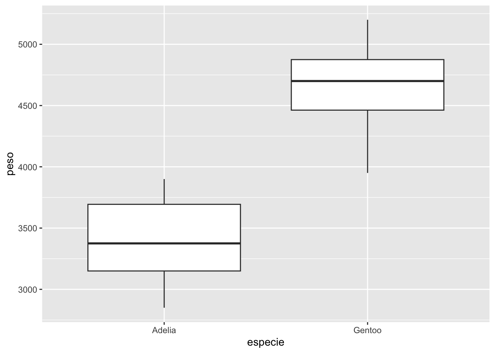

#abrir o conjunto de pacotes do tidyverse
library(tidyverse)
#importar dados de pinguins
library(readxl)
pinguins <- read_excel("dados_R.xlsx", sheet = "pinguins")12 Introdução ao Tidyverse
O tidyverse é um conjunto de pacotes desenvolvido para Ciência de Dados (Data Science) no R. Ele apresenta funções que facilitam a análise de conjunto de dados grandes. Esses pacotes utilizam uma sintaxe diferente do R básico e apresentam ferramentas de importação, manipulação, exploração, visualização, análise e comunicação de dados adaptadas trabalahr com conjuntos de dados grandes. O Tidyverse é descrito e explorado em profundidade em referências como Wickham et al. (2023). Neste capítulo introduziremos algumas das principais funções desse conjunto de pacotes.
12.1 Instalação e importação de dados de exemplo.
Para este tópico, utilizaremos alguns pacotes do tidyverse e o conjunto de dados dos pinguins. Os pacotes do tidyverse podem ser instalados todos juntos utilizando install.packages("tidyverse) e depois carregados:
12.2 Utilizando pipes
Os pipes são ferramentas que permitem criar sequências de operações, em vez de aninhar funções uma dentro da outra. Eles permitem que se realize várias modificações de um objeto sem a necessidade de se criar objetos intermediários, o que pode facilitar bastante o fluxo de análise. O operador pipe é representado por %>% no tidyverse. Há também o pipe nativo do R |>, que funciona de forma muito próxima ao pipe do tidyverse e em geral podem ser usados da mesma forma. O pipe pode se radicionado no Rstudio com o atalho Ctrl + Shift + M.
#média de peso
mean(pinguins$peso)[1] 4207.057#média de peso com o pipe do tidyverse
pinguins$peso %>%
mean()[1] 4207.057#média de peso com o pipe nativo do R
pinguins$peso |>
mean()[1] 4207.05712.3 O pacote dplyr
O pacote dplyr apresenta funções para manipular conjuntos de dados, como filtrar, reordenar ou selecionar colunas. Vamos utilizar no exemplo, a função summarise() e group_by() para calcular estatísticas descritivas para as espécies de pinguins
summarise()utilizada para resumir os dados de coluna em um único valorgroup_by()utilizada para agrupar variáveis por um determinado fator.
No exemplo (1) calculamos a média do peso dos pinguins. Utilizamos summarise(peso_média = mean(peso)) para criar uma variável peso_média representando a média de peso_g dos pinguins; (2) utilizamos a função group_by() para agrupar os pesos por espécie e depois caculamos a média e o desvio padrão para cada espécie utilizando summarise(), e (3) calculamos a média e desvio padrão para cada espécie e sexo.
#peso médio dos pinguins
pinguins %>%
summarise(peso_média = mean(peso))# A tibble: 1 × 1
peso_média
<dbl>
1 4207.#média e desvio padrão de peso agrupada para cada espécie
pinguins %>%
group_by(especie) %>%
summarise(peso_média = mean(peso), peso_sd = sd(peso))# A tibble: 3 × 3
especie peso_média peso_sd
<chr> <dbl> <dbl>
1 Adelia 3706. 459.
2 Barbicha 3733. 384.
3 Gentoo 5092. 501.#média e desvio padrão de peso agrupada para cada espécie e sexo
pinguins %>%
group_by(especie, sexo) %>%
summarise(peso_média = mean(peso), peso_sd = sd(peso))`summarise()` has grouped output by 'especie'. You can override using the
`.groups` argument.# A tibble: 6 × 4
# Groups: especie [3]
especie sexo peso_média peso_sd
<chr> <chr> <dbl> <dbl>
1 Adelia Femea 3369. 269.
2 Adelia Macho 4043. 347.
3 Barbicha Femea 3527. 285.
4 Barbicha Macho 3939. 362.
5 Gentoo Femea 4680. 282.
6 Gentoo Macho 5485. 313.Vamos utilizar a função select() para selecionar variáveis de interesse. Depois utilizaremos a função mutate() para transformar variáveis ou realizar cálculos para calcular a razão entre a coluna do peso e a coluna do comprimento da nadadeira.
pinguins %>%
select(especie, sexo, peso, nadadeira) %>%
mutate(peso.nadadeira = peso/nadadeira)# A tibble: 333 × 5
especie sexo peso nadadeira peso.nadadeira
<chr> <chr> <dbl> <dbl> <dbl>
1 Adelia Macho 3750 181 20.7
2 Adelia Femea 3800 186 20.4
3 Adelia Femea 3250 195 16.7
4 Adelia Femea 3450 193 17.9
5 Adelia Macho 3650 190 19.2
6 Adelia Femea 3625 181 20.0
7 Adelia Macho 4675 195 24.0
8 Adelia Femea 3200 182 17.6
9 Adelia Macho 3800 191 19.9
10 Adelia Macho 4400 198 22.2
# ℹ 323 more rowsCaso eu tenha interesse em criar uma coluna transformado o peso em gramas em peso em kg (1 kg = 1000 g).
pinguins %>%
select(especie, sexo, peso) %>%
mutate(peso_kg = peso/1000)Utilizando a função filter() para filtrar (selecionar) somente pinguins fêmeas da ilha biscoe, depois utilizar o ggplot2 para criar um gráfico boxplot comparando as espécies. Para mais informações sobre gráficos).
library(ggplot2)
pinguins %>%
filter(sexo == "Femea" & ilha == "Biscoe") %>%
ggplot(aes(y = peso, x = especie))+
geom_boxplot()
12.3.1 Formato longo e curto: pivot_longer() e pivot_wider()
Essas funções podem ser usadas para colocar os dados em formato longo (menos colunas e mais linhas) ou largo (menos linhas e mais colunas).
pinguins %>%
select(especie, sexo, peso, nadadeira) %>%
pivot_longer(peso: nadadeira, names_to = "variável", values_to = "valor")# A tibble: 666 × 4
especie sexo variável valor
<chr> <chr> <chr> <dbl>
1 Adelia Macho peso 3750
2 Adelia Macho nadadeira 181
3 Adelia Femea peso 3800
4 Adelia Femea nadadeira 186
5 Adelia Femea peso 3250
6 Adelia Femea nadadeira 195
7 Adelia Femea peso 3450
8 Adelia Femea nadadeira 193
9 Adelia Macho peso 3650
10 Adelia Macho nadadeira 190
# ℹ 656 more rowsVamos fazer o movimento inverso com os dados de pinguins, transformando do formato longo para o largo. Para fazer isso, vamos criar um objeto com os dados longos. Para que possamos reverter do formato longo para o largo, precisamos de um valor único para identificar cada linha, então criaremos uma coluna com a identificação da linha (id) com valores de 1 a 333 (o número de linhas do conjunto de dados).
pinguins_longo <-
pinguins %>%
select(especie, sexo, peso, nadadeira) %>%
mutate(id = 1:nrow(pinguins)) %>%
pivot_longer(peso:nadadeira, names_to = "variável", values_to = "valor")
head(pinguins_longo) #ver as primeiras linhasAgora vamos transformar do formato longo para o formato largo:
pinguins_longo %>%
pivot_wider(names_from = "variável", values_from = "valor")# A tibble: 333 × 5
especie sexo id peso nadadeira
<chr> <chr> <int> <dbl> <dbl>
1 Adelia Macho 1 3750 181
2 Adelia Femea 2 3800 186
3 Adelia Femea 3 3250 195
4 Adelia Femea 4 3450 193
5 Adelia Macho 5 3650 190
6 Adelia Femea 6 3625 181
7 Adelia Macho 7 4675 195
8 Adelia Femea 8 3200 182
9 Adelia Macho 9 3800 191
10 Adelia Macho 10 4400 198
# ℹ 323 more rows12.4 Dados relacionais
Podemos buscar informações de uma tabela em outra tabela, caso tenhamos uma coluna chave que relaciona as duas.
Nos conjuntos de dados, a aba amostras apresenta os dados de amostragem como data e local de coleta, enquanto a planilha id apresenta dados da identificação das espécies coletadas.
library(readxl)
amostras <- read_excel("dados_R.xlsx", sheet = "amostras")
amostras# A tibble: 29 × 6
Amostra Dia Mês Ano Pais Prov_Est
<chr> <dbl> <dbl> <dbl> <chr> <chr>
1 AM001 1 3 2019 Brasil Goiás
2 AM002 1 3 2019 Brasil Goiás
3 AM003 1 3 2019 Brasil Goiás
4 AM004 6 4 2019 Brasil Goiás
5 AM005 6 4 2019 Brasil Goiás
6 AM006 12 8 2019 Brasil Goiás
7 AM007 12 8 2019 Brasil Goiás
8 AM008 12 8 2019 Brasil Goiás
9 AM009 12 8 2019 Brasil Goiás
10 AM010 12 8 2019 Brasil São Paulo
# ℹ 19 more rowsid <- read_excel("dados_R.xlsx", sheet = "id")
id# A tibble: 24 × 3
Amostra Familia Especie
<chr> <chr> <chr>
1 AM001 Eupelmidae Lutnes testaceus
2 AM001 Mymaridae Gonatocerus litoralis
3 AM001 Eupelmidae Merostenus melinus
4 AM005 Mymaridae Neomymar mirabilicorne
5 AM005 Mymaridae Neomymar mirabilicorne
6 AM005 Mymaridae Neomymar soror
7 AM005 Mymaridae Neomymar soror
8 AM010 Encyrtidae Copidosoma floridanum
9 AM024 Eupelmidae Lutnes testaceus
10 AM024 Mymaridae Gonatocerus litoralis
# ℹ 14 more rowsAs tabelas apresentam uma coluna chave (key) chamada Amostra, que relaciona uma com a outra. Com isso, podemos preencher o dado da tabela da identificação dos insetos com as informações de coleta:
match(id$Amostra, amostras$Amostra) # encontra a correspondência para cada elemento de id em amostra. [1] 1 1 1 5 5 5 5 10 24 24 24 24 24 24 5 6 7 8 9 9 12 23 24 2512.4.1 Trabalhando com dados relacionais e filtros no tidyverse
Pacotes como o dplyr apresentam diversas funções para manipular conjuntos de dados. Vamos juntar as tabelas id e amostras pela coluna Amostra, e depois filtrar somente as amostras de Goiás e pertencentes à Família Agaonidae:
library(dplyr)
id %>%
left_join(amostras, by = "Amostra") %>%
filter(Prov_Est == "Goiás" & Familia == "Agaonidae")# A tibble: 5 × 8
Amostra Familia Especie Dia Mês Ano Pais Prov_Est
<chr> <chr> <chr> <dbl> <dbl> <dbl> <chr> <chr>
1 AM005 Agaonidae Pegoscapus aerumnosus 6 4 2019 Brasil Goiás
2 AM006 Agaonidae Pegoscapus aerumnosus 12 8 2019 Brasil Goiás
3 AM007 Agaonidae Pegoscapus sp.4 12 8 2019 Brasil Goiás
4 AM008 Agaonidae Pegoscapus sp.4 12 8 2019 Brasil Goiás
5 AM009 Agaonidae Pegoscapus sp.4 12 8 2019 Brasil Goiás